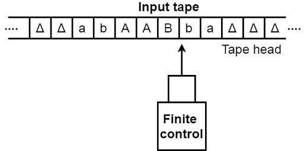
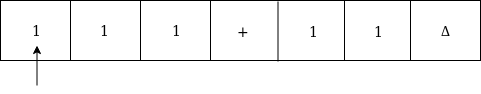
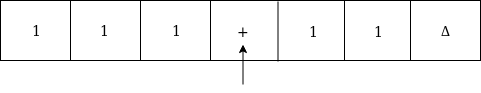
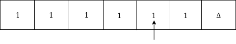
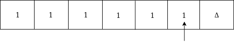
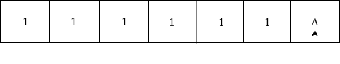
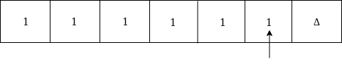
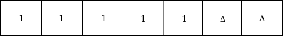
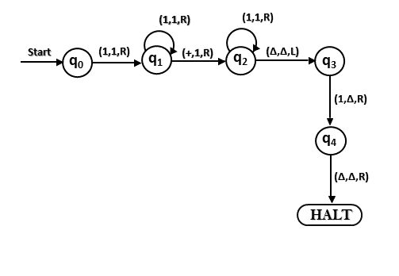

Teori Bahasa dan Otomata
Jauh sebelum lahirnya program komputer, Alan Turing pada tahun 1936 telah mengeluarkan gagasannya berupa model mesin abstrak sebagai alat mekanik untuk mengerjakan prosedur yang efektif. Model ini disebut Mesin Turing.
Mesin turing dapat diadaptasi untuk mensimulasi logika dari setiap algoritma oleh karena itu cara kerja mesin turing adalah ekivalen dengan cara kerja komputer sekarang ini dan mesin turing juga ekivalen dengan problema komputasi matematika. Mesin turing tidak ditujukan sebagai teknologi komputasi praktis tetapi lebih sebagai eksperimen pemikiran yang mewakili sebuah mesin komputasi. Mesin turing membantu para ilmuan komputer memahami batas-batas komputasi mekanis.
Pada 1950, Alan mengeluarkan paper yang berpengaruh besar berjudul Computing Machinery and Intelligence. Dalam paper-nya ini, Alan mengusulkan "Tes Turing" sebagai sebuah metode untuk menentukan apakah sebuah mesin memiliki "artificial intelligence". Turing melihat otak manusia sebagai sebuah "mesin yang tidak teratur" yang belajar melalui pengalaman. Hingga tahun 1990-an tes ini masih dianggap sebagai cara yang paling baik untuk menentukan intelegensia dari sebuah mesin.
Mesin Turing adalah model komputasi teoretis yang berfungsi sebagai model yang ideal untuk melakukan perhitungan matematis. Walaupun model ideal diperkenalkan sebelum komputer nyata dibangun, model ini tetap diterima kalangan ilmu komputer sebagai model komputer yang sesuai untuk menentukan apakah suatu fungsi dapat diselesaikan oleh komputer atau tidak (menentukan fungsi yang dapat dihitung). Mesin Turing terkenal dengan ungkapan "Apapun yang bisa dilakukan oleh Mesin Turing pasti bisa dilakukan oleh komputer".
Sebuah mesin turing terdiri atas tape (pita) dengan jumlah sel yang tak terhingga, setiap sel berisi satu simbol input dan dengan demikian string input dapat ditempatkan pada pita. Pita kosong diisi dengan karakter kosong. Kemudian Finite control dan head tape yang bertanggung jawab untuk membaca simbol masukan saat ini. Head tape dapat bergerak dari kiri ke kanan. Sekumpulan keadaan terbatas yang harus dilalui mesin. Kumpulan simbol hingga yang disebut simbol eksternal yang digunakan dalam membangun logika mesin turing.
Mesin Turning dapat dimodelkan dengan bantuan representasi berikut.
Mesin Turing M dapat didefinisikan oleh tujuh tupel sebagai:
M = (Q, X, ∑, δ, q0, B, F)Dimana,
Bangun TM untuk fungsi penjumlahan untuk sistem bilangan unary.
Solusi:
Bilangan unary hanya terdiri dari satu karakter, yaitu bilangan 5 dapat ditulis dalam sistem bilangan unary sebagai 11111.
Pada TM ini kita akan melakukan penjumlahan dua bilangan unary.
Sebagai contoh:
2 + 3
yaitu 11 + 111 = 11111
Jika Anda mengamati proses penjumlahan ini, Anda akan menemukan kemiripan dengan fungsi penggabungan string.
Dalam hal ini, kita cukup mengganti + dengan 1 dan bergerak maju ke kanan untuk mencari ujung string yang akan kita ubah 1 terakhir menjadi Δ.
Input: 3 + 2
Simulasi untuk 111 + 11Δ dapat dilihat sebagai berikut:
Pindah ke kanan ke + tanda sebagai:
Ubah + menjadi 1 dan geser ke kanan sebagai:
Sekarang, ke kanan
Sekali lagi bergerak ke kanan
Sekarang Δ telah ditemukan, jadi pindah saja ke kiri sebagai:
Ubah 1 menjadi Δ
Jadi rekaman itu sekarang terdiri dari penjumlahan dua bilangan unary.
TM akan terlihat seperti berikut:
Di sini, kami menerapkan fungsi f (a + b) = c. Kami mengasumsikan a dan b keduanya adalah elemen bukan nol.

Basic Model of Turing Machine, Javatpoint: https://bit.ly/34bGNmY.
Example of TM, JavaTPoint: https://bit.ly/2KjR21s.
Mesin Turing Wikipedia: https://bit.ly/3oUo4Ev.
Turing Machine Introduction, Tutorials Point: https://bit.ly/34c6Vhx.